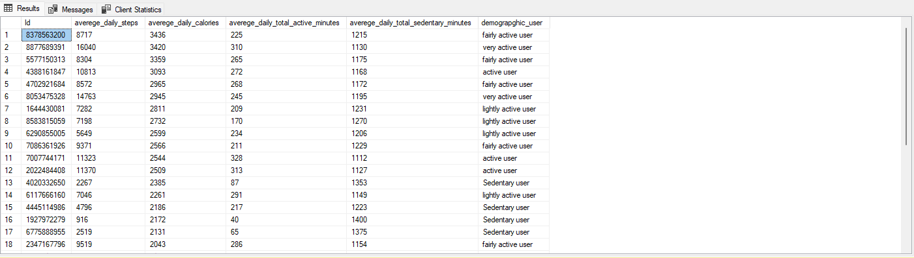
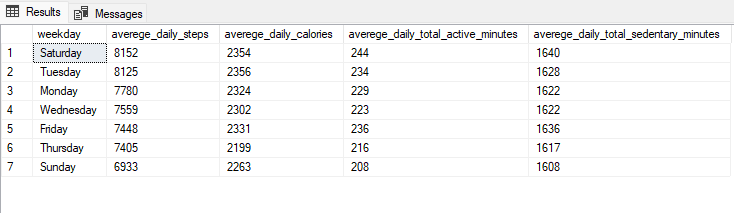
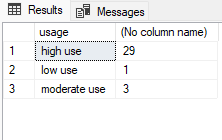
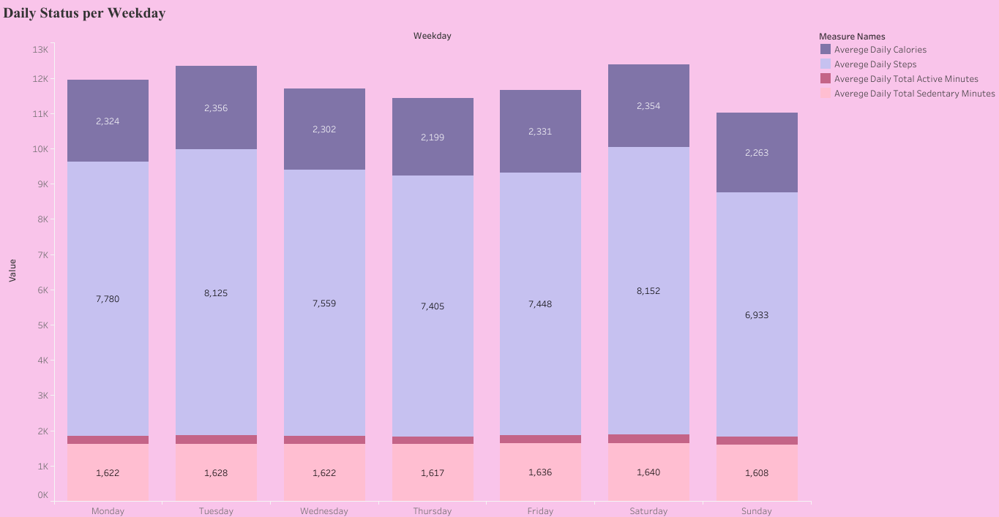
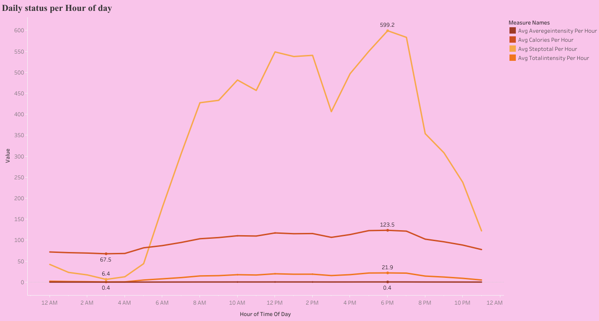

Bellabeat Case Study
In this case study, I analyze Fitness traker data from a Fashionable health trackers designed and engineered for women called Bellabeat, in order to identify trends in how their customers use Health tracker differently. The main tools I use are spreadsheets, SQL and Tableau. Here are the highlights:

Scenario
You are a junior data analyst working on the marketing analyst team at Bellabeat, a high-tech manufacturer of health-focused products for women. Bellabeat is a successful small company, but they have the potential to become a larger player in the global smart device market. Urška Sršen, cofounder and Chief Creative Officer of Bellabeat, believes that analyzing smart device fitness data could help unlock new growth opportunities for the company. You have been asked to focus on one of Bellabeat’s products and analyze smart device data to gain insight into how consumers are using their smart devices. The insights you discover will then help guide marketing strategy for the company. You will present your analysis to the Bellabeat executive team along with your high-level recommendations for Bellabeat’s marketing strategy.
Defining the problem
Urška Sršen (Bellabeat’s cofounder and Chief Creative Officer) thinks that an analysis of Bellabeat’s available consumer data would reveal more opportunities for growth. She has asked the marketing analytics team to focus on a Bellabeat product and analyze smart device usage data in order to gain insight into how people are already using their smart devices. Then, using this information, she would like high-level recommendations for how these trends can inform Bellabeat marketing strategy. Good starting points would be:
1) What are some trends in smart device usage?2) How could these trends apply to Bellabeat customers?
3) How could these trends help influence Bellabeat marketing strategy?
By looking at the data, we will be able to first get a broad sense of certain patterns that are occurring among users, understand the difference between each user behavior will provide more accurate customer profiles. These insights will help the marketing analytics team design high quality targeted marketing for more opportunities for growth.
Business task
Analyze smart device usage data in order to gain insight into how consumers use non-Bellabeat smart devices. And apply these insights onto one of Bellabeat product in my Presentation.
Data Source
For the purpose of this analysis, Bellabeat’s Chief Creative, Urška Sršen gave his nod to the usage of a public data that explored smart device user’s daily measures - the FitBit Fitness Tracker Data.
The FitBit Fitness Tracker Data is a public domain dataset made available by Möbius under CC0 database protection license. The dataset, comprising of 18 .csv files, has the combined personal fitness tracker statistics from thirty (30) FitBit users who consented to submit their personal data which includes their heart rate, sleep details, intensities, physical activities and other related data necessary to assess their habits.Data Selection
The 18 datasets were first opened on Excel for preliminary review, filtering and sorting to observe for blanks, inconsistent naming convention, missing data and possible duplicity of data.
From the review, I observed the data for daily_calories, daily_intensities, and daily_steps data frames are contained in daily_activity data frame. For ease of analysis, these data frames will be deemed well represented and taken out of our analysis to avoid duplicity.
Same thing with minuteCalories, minuteIntensities, minuteSteps there were two files represents these data in (wide and narrow) format so I had to choose one format and I chose the wide format.
I also used hourlyCalories, hourlyIntensities, hourlySteps which may give me some insights about the user’s behavior during the day. Here are the files:
1. dailyActivity_merged
2. hourlyCalories_merged
3. hourlyIntensities_merged
4. hourlySteps_merded
5. minuteCaloriesWide_merged
6. minuteIntensitiesWide_merged
7. minuteStepsWide_merged
Data Assessment for credibility & integrity
To determine the credibility, reliability and integrity of the dataset presented, I will utilize the ROCCC (Reliable, Original, Comprehensive, Current & Cited) data test model.
Reliability: (LOW) There were only 30 individuals involved in this survey. This is a very small sample size for making far-reaching analysis & recommendation for the required business task.
Originality: (LOW) Data is sourced from a third-party survey by Amazon Mechanical Turk.
Comprehensive: (MEDIUM) – Data is within the parameters required for the Bellabeat’s business task.
Current: (LOW) The dataset was sourced back in 2016 (over 8 years ago) and covered a short period of March – May 2016. It is my opinion that this data is somewhat stale given the pace of better and improved health data tracking methods over the years. More so, a 2-month data collection window is so short for the highly dynamic data type.
Cited: (MEDIUM) The third-party dataset was available by Mobius via Kaggle.
I also observed some limitations to the data provided as it did not give information on key characteristics such as gender, age, location, lifestyle of the participants.
Data cleaning and manipulation
Analysis #1: Exploratory
Microsoft Excel: initial data cleaning and manipulation
My next step is making sure the data is stored appropriately and prepared for analysis. After downloading all 7 files, I housed the files in a temporary folder on my desktop. As data files are small in size, I will start my process step in Excel and check each file to get familiar with the data.
While exploring the data in Excel I checked for any duplicates, typos, or any missing data and fixed any errors that may present before moving to SQL for the analysis step.
All files didn’t have any duplicates or typos (which is a good thing).
While exploring all the files I noticed that there are two files (minuteSleep_merged , sleepDay_merged) were missing 8 users compering to the rest of the files, also many day’s data were missing for an already present users so I had to discard this data and not using them to ensure consistent and good insight.
Further data cleaning and manipulation via SQL
I started my analysis by checking how many users in each file to be consistent in my analysis.
select
COUNT(distinct id)
from
Bellabeat..dailyActivity_merged
--2
select
COUNT(distinct id)
from
Bellabeat..hourlyCalories_merged
--3
select
COUNT(distinct id)
from
Bellabeat..hourlyIntensities_merged
--4
select
COUNT(distinct id)
from
Bellabeat..hourlySteps_merged
--5
select
COUNT(distinct id)
from
Bellabeat..minuteCaloriesWide_merged
--6
select
COUNT(distinct id)
from
Bellabeat..minuteIntensitiesWide_merged
--7
select
COUNT(distinct id)
from
Bellabeat..minuteStepsWide_merged

## From the last 7 queries I confirmed that all tables are consistent as it all contain data of 33 users.
1. I will explore dailyActivity table
I will categorize our users into demographic categories by the average daily number of steps according to Counting your steps
upon further inspection of the data in excel I have noticed that the sleeping records are not accurately entered as some days the user have entered the sleeping time as SedentaryMinutes, so to make all the data consistent I will combine (very active minutes, fairly active minutes and lightly active minutes) as total active minutes and if we subtract it from 1440(24 hr contain 1440 minutes) it will give us total sedentary minutes (sedentary minutes + sleeping minutes).
• avg daily (steps, calories, active minutes, sedentary minutes)
select
Id,
averege_daily_steps,
averege_daily_calories,
averege_daily_total_active_minutes,
1440-averege_daily_total_active_minutes as averege_daily_total_sedentary_minutes,
case
when averege_daily_steps <5000 then 'Sedentary user'
when averege_daily_steps >=5000 and averege_daily_steps <7499 then 'lightly active user'
when averege_daily_steps >=7500 and averege_daily_steps <9999 then 'fairly active user'
when averege_daily_steps >=10000 and averege_daily_steps <12499 then 'active user'
when averege_daily_steps >12500 then 'very active user'
else null
end as demograpghic_user
from
(
select
Id,
cast(AVG(TotalSteps)as int) as averege_daily_steps,
cast(AVG(Calories)as int) as averege_daily_calories,
cast(AVG(VeryActiveMinutes+FairlyActiveMinutes+LightlyActiveMinutes)as int) as averege_daily_total_active_minutes
from
Bellabeat..dailyActivity_merged
group by
Id
) as avd_daily_steps
order by
3 desc

• number of each demographic user
select
demograpghic_user,
count(demograpghic_user) as total_user
from
(
select
Id,
averege_daily_steps,
averege_daily_calories,
averege_daily_total_active_minutes,
1440-averege_daily_total_active_minutes as averege_daily_total_sedentary_minutes,
case
when averege_daily_steps <5000 then 'Sedentary user'
when averege_daily_steps >=5000 and averege_daily_steps <7499 then 'lightly active user'
when averege_daily_steps >=7500 and averege_daily_steps <9999 then 'fairly active user'
when averege_daily_steps >=10000 and averege_daily_steps <12499 then 'active user'
when averege_daily_steps >12500 then 'very active user'
else null
end as demograpghic_user
from
(
select
Id,
cast(AVG(TotalSteps)as int) as averege_daily_steps,
cast(AVG(Calories)as int) as averege_daily_calories,
cast(AVG(VeryActiveMinutes+FairlyActiveMinutes+LightlyActiveMinutes)as int) as averege_daily_total_active_minutes
from
Bellabeat..dailyActivity_merged
group by
Id
) as avd_daily_steps
)as count
group by demograpghic_user

## I will further Analyse this query in Tableau.
• daily status per weekday
select
datename(weekday,ActivityDate) as weekday,
cast(AVG(TotalSteps)as int) as averege_daily_steps,
cast(AVG(Calories)as int) as averege_daily_calories,
cast(AVG(VeryActiveMinutes+FairlyActiveMinutes+LightlyActiveMinutes)as int) as averege_daily_total_active_minutes,
cast(AVG(1440 - VeryActiveMinutes+FairlyActiveMinutes+LightlyActiveMinutes)as int) as averege_daily_total_sedentary_minutes
from
Bellabeat..dailyActivity_merged
group by
datename(weekday,ActivityDate)
order by
2 desc

## we can see from this query that Saturday is the highest avg_daily steps with the highest avg_daily total active minutes.
• now we will see how many days did the users wear the smart band
select
usage,
count(total_days)
from
(
select
total_days,
case
when total_days <=31 and total_days >21 then 'high use'
when total_days <=20 and total_days >11 then 'moderate use'
when total_days <=10 and total_days >0 then 'low use'
else null
end as usage
from
(
select
Id,
count(Id) as total_days
from
Bellabeat..dailyActivity_merged
group by
Id
) as daily_usage
) as usage_table
group by
usage

## from the last 2 queries we see that 87% of total users (33) user wear the band more than 21 days. Which proves that our insight is fairly reliable and consistent.
2. I will explore all hourly data tables
• I will join all the hourly tables for easy categorization and exploration
select
hc.Id,
hc.ActivityHour,
hc.Calories,
hi.TotalIntensity,
hi.AverageIntensity,
hs.StepTotal
from
Bellabeat..hourlyCalories_merged as hc
join
Bellabeat..hourlyIntensities_merged as hi
on hc.Id = hi.Id
and hc.ActivityHour = hi.ActivityHour
join
Bellabeat..hourlySteps_merged as hs
on hc.Id = hs.Id
and hc.ActivityHour = hs.ActivityHour

• I will calculate hourly status throughout the day
select
cast(ActivityHour as time) as time_of_day,
cast(avg(calories)as decimal(5,2)) as avg_calories_per_hour,
cast(avg(TotalIntensity)as decimal(5,2)) as avg_totalintensity_per_hour,
cast(avg(AverageIntensity)as decimal(5,4)) as avg_averegeintensity_per_hour,
cast(avg(StepTotal)as decimal(5,2)) as avg_steptotal_per_hour
from
(
select
hc.Id,
hc.ActivityHour,
hc.Calories,
hi.TotalIntensity,
hi.AverageIntensity,
hs.StepTotal
from
Bellabeat..hourlyCalories_merged as hc
join
Bellabeat..hourlyIntensities_merged as hi
on hc.Id = hi.Id
and hc.ActivityHour = hi.ActivityHour
join
Bellabeat..hourlySteps_merged as hs
on hc.Id = hs.Id
and hc.ActivityHour = hs.ActivityHour
) as hourly_stats
group by
cast(ActivityHour as time)
order by
2 desc

## from this query we see that (6:00 pm,7:00 pm,8:00 pm) are the busiest hours while (2:00 am,3:00 am,4:00 am) are the least busy hours as people mainly are asleep in these hours.
Analysis #2: Summary
Now that our data is stored appropriately and has been prepared for analysis, I started putting it to work.
That's why we grouped all the files into one to visualize the entire year and discover the hidden trends, relationships and insight..Bellabeat .
For a summary and overall visualization of my full year analysis, please visit the Tableau Public dashboard I created here: Bellabeat Dashboard .
I will also highlight some of the interesting trends and relationships I discovered below.
1. Number of demographic users

## users were Categorized according to avg daily steps according to Counting your steps that resulted in 5 user categories
2. Demographic Users

## I noticed that Fairly active users which has average daily steps (more than 7500 steps and less than 9999 steps) are more active than other users and burnt more calories than the rest of the users.
3. Correlation between Calories and Avg daily steps

## This graph shows positive correlation between calories burnt and daily average number of steps, which means that more the user takes more steps per day the higher the calories he will burn.
4. Correlation between Calories and Avg daily Active minutes

This graph also shows positive correlation between calories burnt and daily average Total active Minutes, which means that the user become active in their daily routine the more calories he will burn.
5. Correlation between Calories and Avg daily Resting minutes

This graph shows negative correlation between calories burnt and daily average total sedimentary minutes, which means that the more the user become less active (sedimentary) the less calories he will burn.
6. Daily status per Weekday
{kind=link}
## without any context on key characteristics such as gender, age, location, lifestyle of the participants we can’t give a good hypothesis, but from the graph we can say that users tend to be more active in Saturday more than Sunday. which means that users tend to spend their Sunday resting to be prepare for work on Monday.
7. Busiest hours throughout the day
{kind=link}
## from this graph we can see that user’s main activity are from 8:00AM to 8:00PM with peak activity at 6:00PM, And a decrease in activity in the lunch period (from 2:00 PM to 4:00PM).
## we also can see that resting (sleeping) hours are mainly from 11:00PM till 6:00 AM.
Conclusion
Stakeholder presentation and dashboard
I've provided links below for my dashboard and shareholder presentation, which includes the following:
• A summary of my analysis
• Supporting visualizations and key findings
• Three recommendations based on my analysis